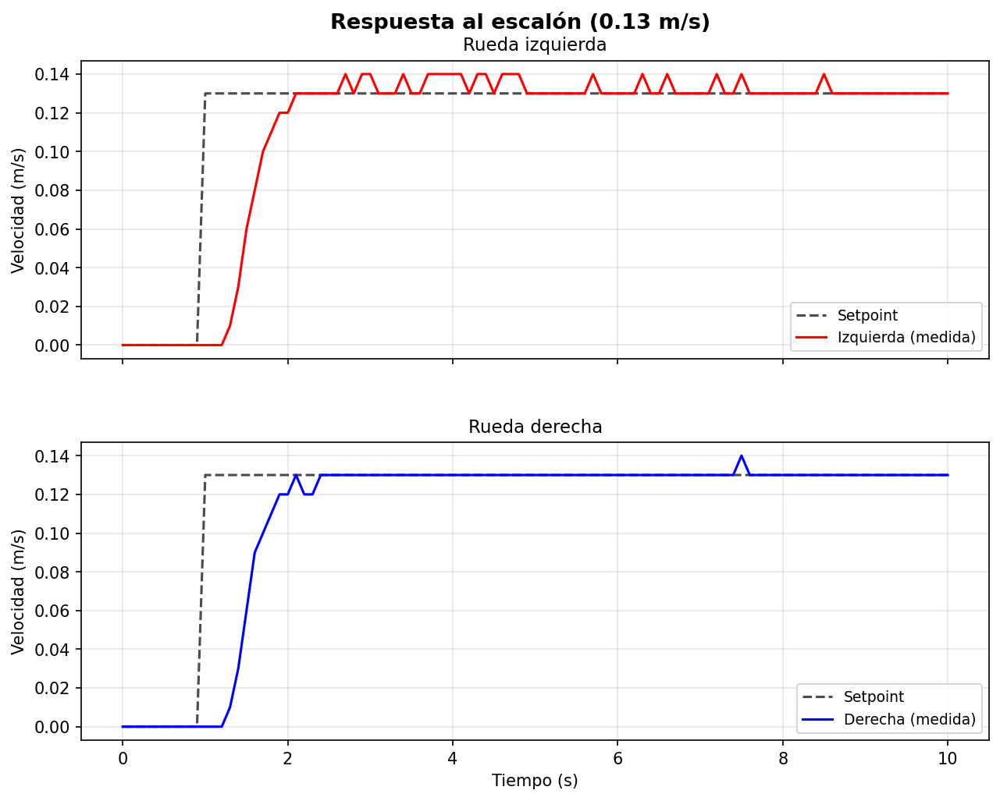
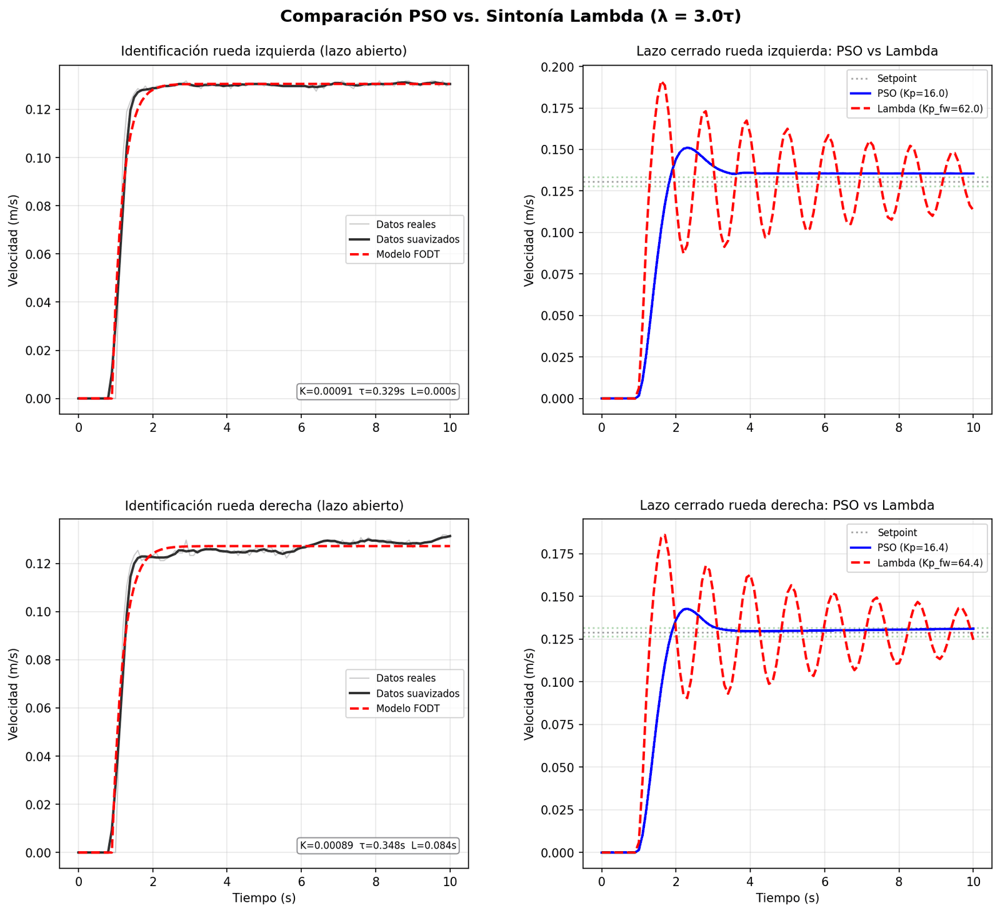
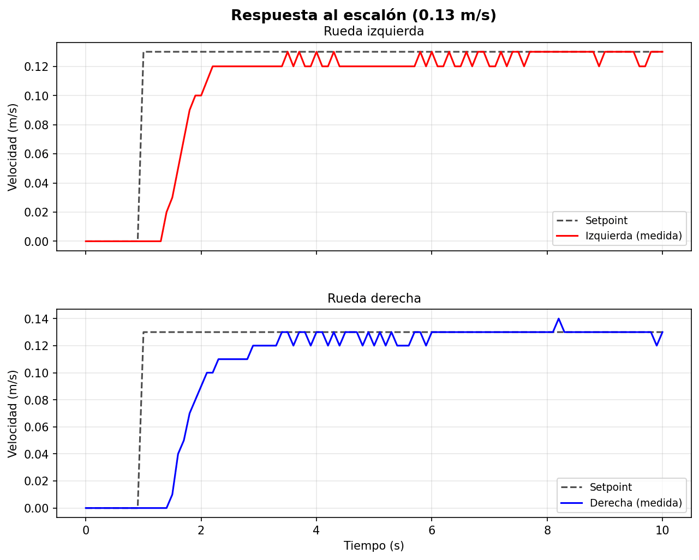

Tiempo continuo
u(t) = P·e(t) + I·∫e(t)dt + D·de(t)/dt
∫e(t)dt se lee «el área acumulada bajo la curva del error». de(t)/dt se lee «qué tan rápido cambia el error en ese instante».
Cómo funciona
Pedirle a una rueda que gire a 0,13 m/s no basta. Hay que medir, comparar y corregir decenas de veces por segundo. Este tema explica cómo lo hace el Arduino, qué encontré al leer su código y cómo busqué las ganancias con un enjambre de partículas.

Cada rueda tiene su propio lazo de control en el Arduino. La ley heredada del firmware se llama PID, pero al leer su código vi que opera como un PI incremental, sin acción derivativa. Sus ganancias partieron de una búsqueda con enjambre de partículas sobre un modelo de cada rueda y las terminé de ajustar en el robot real. Con ellas, ambas ruedas siguen 0,13 m/s sin sobreimpulso apreciable dentro de lo que la medición alcanza a ver. Con ese mismo modelo verifiqué que el lazo discreto es estable y calculé cuánto margen le queda, sin olvidar que el análisis es lineal y el firmware no lo es.
Un lazo cerrado mide la velocidad de la rueda, la compara con la pedida y usa el error para subir o bajar el PWM 1. Cada señal tiene su unidad: ticks por ciclo, PWM y m/s. El PID, el controlador más usado 2, combina una reacción proporcional, una integral y una derivativa.
Si a un motor se le da siempre la misma tensión, su velocidad cambia con la carga, la batería y el roce. Un lazo cerrado lo resuelve midiendo. Compara la velocidad que se quiere con la que se mide, y la diferencia, llamada error, decide cuánto subir o bajar la tensión media que recibe el motor 1.
En este robot las señales del lazo no usan todas la misma unidad. Lo pedido y lo medido se cuentan en ticks por ciclo, la orden al motor es PWM y la rueda responde con una velocidad física en m/s. El dibujo sigue un ciclo completo con esas unidades.
El controlador más usado para esto es el PID, que combina tres reacciones al error 2. La proporcional mira el presente y empuja más mientras más lejos está la meta. La integral mira el pasado, suma el error acumulado y sigue empujando mientras quede una diferencia, aunque sea pequeña. Y la derivativa mira la tendencia del error, o de la medición según la implementación, para amortiguar los cambios.
El error estacionario es lo que queda cuando la rueda ya se estabilizó: con 0,130 m/s pedidos y 0,128 m/s de promedio, son 0,002 m/s 1.
Es la diferencia que queda después de que la rueda se estabiliza, no el error grande del arranque. Si se piden 0,130 m/s y el promedio final es 0,128 m/s, quedan 0,002 m/s de error. En la tesis ese promedio se calcula desde los 7 s 1. La acción integral busca corregir diferencias persistentes, siempre dentro de los límites del motor y de la medición.
En los ejemplos también puedes activar una zona muerta: una señal pequeña todavía no alcanza a mover la rueda. Más adelante se muestra su diferencia con la banda del error.
La serie de MATLAB sobre control PID explica con animaciones qué hace cada término y cómo se lleva a un microcontrolador. Fuente 9
Un ciclo de control es una vuelta completa de medir, comparar y actuar, y la rueda sigue moviéndose entre ciclos. El firmware programa 33 ms, unos 30 ciclos por segundo, porque calcula 1000 / 30 como entero 10. La captura del ensayo, a 10 Hz, es otro reloj.
El Arduino cuenta los ticks del encoder, compara con la referencia, calcula la corrección y actualiza el PWM. Esa secuencia es un ciclo de control. Después mantiene esa orden hasta el siguiente cálculo. La rueda sigue moviéndose entre ciclos.
Frecuencia dice cuántos cálculos se hacen en un segundo. Período dice cuánto tiempo hay entre ellos. Son inversos: T = 1/f. A 30 Hz, T = 1/30 s = 0,03333 s = 33,33 ms. El firmware calcula 1000 / 30 como entero y programa 33 ms, por eso aquí se habla de unos 30 ciclos/s, no de una frecuencia medida exacta 10.
| Reloj | Qué ocurre | Intervalo |
|---|---|---|
| Control de la rueda | Actualiza la corrección y el PWM, a 30 Hz nominales | 33 ms programados |
| Captura para identificar el modelo | Registra una muestra del ensayo, a 10 Hz | 100 ms = 0,1 s |
| Conmutación del PWM | Enciende y apaga el driver para regular la tensión media | Otro reloj, distinto del ciclo de 33 ms |
u(t) = P·e(t) + I·∫e(t)dt + D·de(t)/dt
∫e(t)dt se lee «el área acumulada bajo la curva del error». de(t)/dt se lee «qué tan rápido cambia el error en ese instante».
u[k] = P·e[k] + I·T·(e[1] + e[2] + … + e[k]) + D·(e[k]−e[k−1])/T
La integral se aproxima sumando los errores de cada ciclo, multiplicados por la duración T del ciclo, y la derivada con la diferencia entre dos muestras seguidas. Aquí k identifica el ciclo.
Forma didáctica posicional, con integración rectangular y diferencia hacia atrás. En una implementación se filtra normalmente la derivada. P, I y D nombran acciones convencionales para no confundirlas con las variables Kp, Ki y Kd del firmware 12.
En un PID posicional se calcula el PWM completo, u[k], y en uno incremental, el cambio, Δu[k]. Ninguna forma evita el windup por sí sola 2.
Esta es otra elección, independiente de continuo o discreto. En un PID discreto posicional se calcula el PWM completo: u[k]. En uno incremental se calcula el cambio: Δu[k], y se guarda u[k] = u[k−1] + Δu[k]. Ambas formas pueden representar el mismo PID si las ecuaciones se transforman correctamente. Ninguna evita el windup por sí sola: hay que tratar la saturación y la memoria 2.
En cada ciclo de 33 ms el firmware calcula una corrección con Kp, Kd e ITerm, la divide por Ko = 50 y la suma a la salida anterior, limitada a ±255 10.
ROSArduinoBridge es el firmware abierto que ejecuta el Arduino. El código base llama Kp, Ki y Kd a sus ganancias, pero hay que mirar la ecuación y la memoria para saber qué acción producen 10. Primero calcula una corrección y después la suma a la salida anterior. Esa segunda operación añade una acumulación a cada término.
Corrección: Δu[k] = (Kp·e[k] − Kd·(m[k]−m[k−1]) + ITerm[k−1]) / Ko
Salida: u[k] = limitar(u[k−1] + Δu[k], −255, 255)
Memoria aparte: ITerm[k] = ITerm[k−1] + Ki·e[k], solo si la salida no toca el tope
e: error en ticks/ciclo. m: ticks contados durante un ciclo. u y Δu: PWM. ITerm: unidades internas del numerador. El firmware además trunca y aplica una banda al error. La fórmula describe el orden de actualización, antes de esos cortes.Con Ki = 0, la referencia fija y sin los cortes enteros, la ley equivale a un PI incremental. Con las ganancias definitivas, la ganancia proporcional equivalente es de 0,41 PWM por tick/ciclo en la izquierda y 0,40 en la derecha 1.
| Qué se observa | PID tradicional | Ley usada en el robot |
|---|---|---|
| Acción proporcional | P multiplica el error: referencia − medición | Kd produce una acción proporcional negativa sobre la medición al sumar sus diferencias |
| Acción integral | I acumula el error una vez | Kp añade el error a la salida, que se guarda y se vuelve a incrementar |
| Acción derivativa efectiva | D responde a la tendencia del error y también puede derivar la medición | No queda una derivada efectiva: las diferencias de medición se acumulan y dan una acción proporcional |
| Cuando cambia la referencia | La acción P sobre el error cambia de inmediato | No hay ese salto proporcional de la referencia, pero el nuevo error sí entra en la acumulación mediante Kp |
| Variable llamada Ki | No es comparable directamente con I | Acumula error en ITerm y luego vuelve a acumularlo en la salida: dos sumas, casi anuladas por los enteros |
Si cada ciclo añade 1 PWM por un error que persiste, la contribución guardada va 1, 2, 3… PWM. El nombre Kp no la hace proporcional: la memoria de salida convierte esos incrementos en una integral.
Si la medición sube y luego se mantiene, sus cambios dejan de aportar. La contribución acumulada depende de cuánto cambió la medición desde el inicio, no de su pendiente actual.
El error se acumula primero en ITerm. Ese ITerm se añade a la salida en los ciclos siguientes, así que vuelve a integrarse. Los enteros eliminan muchos de sus pequeños incrementos.
Se supone Ki = 0 y una referencia fija r, para ver solo el efecto de Kp y Kd.
El término con e[k] actúa sobre el error de ahora, como una acción proporcional de tamaño Kd/Ko. El término con la suma de errores es una acción integral de tamaño Kp/Ko por ciclo. Los primeros dos términos son constantes del arranque.
Si Ki es cero, la referencia permanece fija y se ignoran los cortes, la ley equivale a un PI incremental: P efectivo = Kd/Ko e I efectivo por ciclo = Kp/Ko, en la escala de ticks/ciclo 2. Con referencia variable, la referencia entra solo en la acción integral. En las ganancias finales Ki no es literalmente cero, pero los enteros anulan su aporte en la derecha para los errores del ensayo y lo restringen en la izquierda. Por eso describo una operación esencialmente PI, no un PID completo.
Esa forma tiene nombre en los libros. Es el algoritmo de velocidad de Åström y Hägglund, con la integral aproximada por diferencias hacia atrás, sin acción derivativa y con ponderación nula de la referencia en la acción proporcional, que en el libro se escribe bsp = 0 2. Con las ganancias definitivas, la ganancia proporcional equivalente es de 0,41 PWM por tick/ciclo en la izquierda y 0,40 en la derecha, y el tiempo integral equivalente, el período multiplicado por Kd y dividido por Kp, es de 42 y 40 ms 1. El nombre PID se conserva para la familia de controladores, para el objetivo y para las variables del firmware.
La tesis da tres razones para conservar esta ley: es un controlador de uso extendido, ya estaba integrada y simplifica la protección contra el windup (sección 4.4.3) 1. Ninguna es una comparación de desempeño, que queda como trabajo futuro.
La tesis da tres razones para conservar esta ley en vez de reemplazarla por otra formulación del PID o por una ley escrita desde cero 1. Ninguna es una comparación de desempeño, y conviene leer cada una con su límite.
| Razón | Qué respalda y cuál es su límite |
|---|---|
| Es un controlador de uso extendido | El PI es el controlador más común y el PID, el algoritmo de control más usado en robótica, también en robots móviles 2 13 14. La forma incremental se usa en el lazo de velocidad de robots diferenciales de laboratorio, de vehículos autoequilibrados, de andadores robóticos con Arduino y de plataformas ROS 2 que, como esta, envían las consignas por puerto serie 15 16 17 18. También regula el deslizamiento de ruedas en vehículos agrícolas 19. Que sea común no prueba que sea la mejor para este robot. |
| Ya estaba integrada | Conservarla permitió reutilizar la interfaz diffdrive_arduino, que usa el protocolo serial de este firmware, y concentrar el desarrollo en la navegación y la exploración 22. Mantener un algoritmo por compatibilidad con el equipo existente es una de las razones por las que los fabricantes conservan la forma incremental 2. El protocolo no obliga a conservar la fórmula de doPID, porque la ley vive en un archivo aparte. |
| Simplifica la protección contra el windup | La forma incremental facilita proteger el integrador cuando el motor llega a su tope y permite hacer la mayoría de los cálculos solo con incrementos. Por eso también se adopta en implementaciones de referencia del PID 2 20. Un PID posicional también puede tener esas protecciones. |
Reescribir la ley tampoco era gratis. Un PID nuevo obliga a revisar la escala de ganancias, el período, los estados, los enteros, el filtrado derivativo y la recuperación al saturarse, y después a repetir la validación para poder comparar. Es trabajo de diseño y prueba, no una imposibilidad del Arduino.
No se cambió esta ley, por lo que todos los resultados pertenecen a ella. El OE2, que pedía un controlador PID en lazo cerrado sobre las velocidades de las ruedas, se declara cumplido en parte. La estabilidad de la ley se verificó sobre su idealización lineal, pero ese análisis no incluye los efectos no lineales del firmware y el desempeño se midió en un único punto de operación. Compararla con un PID incremental estándar a varias velocidades sigue siendo trabajo futuro.
Una ganancia se interpreta por la ecuación y por la memoria que la rodea.
En la rueda derecha, con Ki de 0,001, el término integral queda siempre en cero. En la izquierda, con Ki de 0,075, solo crece con errores positivos de al menos 14 ticks/ciclo, cerca de 0,045 m/s, sobre todo al arrancar 1.
Esto tiene un efecto directo sobre Ki. En la rueda derecha, con Ki de 0,001, el producto de Ki por el error solo llegaría a una unidad interna desde ITerm=0, con un error positivo de al menos 1000 ticks/ciclo, muy superiores a los del ensayo, así que su término integral queda siempre en cero. En la izquierda, con Ki de 0,075, desde ITerm=0 solo crece con errores positivos de al menos 14 ticks/ciclo, cerca de 0,045 m/s, lo que pasa sobre todo al arrancar 1.
En el firmware original Ki y el error eran enteros, así que su producto no tenía decimales que perder. La división por Ko sí podía truncar el incremento de salida. Al pasar a ganancias con decimales, el estado integral siguió siendo un entero de 16 bits, y ahí aparecieron las pérdidas. Es un error muy común al adaptar código embebido, y por eso tiene su propia sección en Lecciones de ingeniería.
Si ITerm ya es distinto de cero, el corte de la suma completa también importa: un error negativo pequeño puede bajar esa memoria al truncar hacia cero. El umbral de 14 ticks describe el crecimiento desde cero con error positivo, no todos los cambios posibles de ITerm.
El Arduino Nano guarda varios resultados intermedios como números enteros. Las ganancias se aplican con decimales, pero el error, el aumento de la salida y el término integral se recortan hacia cero al guardarse 1. Si el incremento calculado es 0,9 PWM, se guarda 0 PWM: la orden al motor no cambia en ese ciclo. No se guarda ese 0,9 para sumarlo después.
Si la rueda está trabada, un integrador sin protección sigue acumulando y, al liberarla, puede mantener el PWM en el tope de ±255 aunque la velocidad ya haya alcanzado la referencia. Conviene mirar la velocidad en m/s y las órdenes PWM por separado.
El motor puede recibir como máximo ±255 PWM. Si la rueda está trabada, sigue habiendo error de velocidad, pero aumentar una orden interna por encima de ese máximo no da más fuerza. Un integrador sin protección sigue acumulando. Al liberar la rueda, puede mantener el PWM en el tope aunque la velocidad ya haya alcanzado la referencia: esa memoria excesiva tarda en descargarse.
Para verlo, hay que mirar la velocidad que observas y la orden que se calcula y se aplica. No son dos velocidades: una es la respuesta física en m/s y las otras son señales PWM dentro del controlador y hacia el motor.
Ese es el windup: acumular una corrección que el actuador ya no puede aplicar. La protección depende de los topes y del manejo de la memoria, no de llamar «incremental» al controlador 11. Más abajo puedes liberar la rueda y observar la recuperación.
Se limita la nueva salida a ±255 antes de guardarla, de modo que el exceso calculado no pasa a la memoria de salida. Además, ITerm deja de actualizarse cuando la salida toca cualquiera de los topes. Esto es integración condicional en ese estado aparte 10.
El firmware congela ITerm en ambos topes. Una protección convencional más completa también considera si el error ayuda a salir de la saturación. No se demuestra aquí que esta estrategia sea óptima ni que elimine cualquier sobreimpulso. Un PID tradicional puede usar integración condicional o realimentar la diferencia entre la señal pedida y la aplicada para limitar su memoria 11.
La zona muerta física se mide en PWM y la banda muerta del error en ticks/ciclo. No son intercambiables.
En el conjunto driver y motor, la zona muerta física se refiere a un rango de PWM que no consigue mover la rueda. En el firmware, la banda muerta del error es una decisión del software para ignorar diferencias pequeñas. La primera usa PWM y la segunda, ticks/ciclo. No son intercambiables.
Se identificó un modelo FOPDT para cada rueda, con un escalón de 143 PWM y encoders cada 0,1 s durante 10 s 3. Sus retardos, 0,0001 s y 0,0692 s, son menores que la captura de 0,1 s (Tabla A4.4).
Para buscar ganancias sin probar a ciegas en el robot, primero se identificó un modelo de cada rueda. Se aplicó un escalón de PWM de 143 sin control y se registraron los encoders cada 0,1 s durante 10 s. Con esa respuesta se ajustó un modelo de primer orden con retardo, conocido como FOPDT, que resume una rueda con tres números. Cuánto responde, qué tan rápido y con cuánta demora 3.
| Parámetro del modelo | Rueda izquierda | Rueda derecha |
|---|---|---|
| Ganancia, cuánto responde (m/s por unidad de PWM) | 0,000913 | 0,000890 |
| Constante de tiempo, qué tan rápido | 0,3291 s | 0,3485 s |
| Retardo, cuánta demora | 0,0001 s | 0,0692 s |
Los tres números se leen sobre la curva. La ganancia dice a qué velocidad llega la rueda por cada unidad de PWM, una vez que la respuesta se estabiliza. La constante de tiempo es lo que tarda en recorrer el 63 % del camino hacia ese valor. El retardo es el tiempo en que todavía no reacciona.
¿Por qué conservar un retardo que no se distingue de cero? Porque la estructura FOPDT contiene al modelo de primer orden como caso particular, el de un motor de corriente continua cuando se desprecia la inductancia, y permite estudiar escenarios de retardo en el análisis de estabilidad 3 23. Cualquier retardo menor que 0,1 s da el mismo costo de ajuste, y por eso el optimizador entregó 0,0692 s para la derecha y otro script, 0,0845 s, con la misma ganancia y la misma constante de tiempo 1. Medir retardos menores exige capturar más rápido, y eso queda como trabajo futuro.

Que las dos ruedas tengan modelos distintos importa. Cada modelo permite buscar y evaluar ganancias propias para esa rueda, en vez de suponer que ambas responderán igual.
El PSO busca un trío de ganancias con 50 partículas y 150 generaciones, un factor de constricción de 0,7298 y coeficientes de 2,05 4 5 6. El costo es el error cuadrático medio de la velocidad simulada más una penalización por sobreimpulso que pesa el triple 1.
La optimización por enjambre de partículas, o PSO, se inspira en cómo se mueve una bandada de aves, es decir, un grupo de pájaros que se desplaza en conjunto 4. Cada partícula es un candidato, aquí un trío de ganancias. En cada generación, cada partícula se mueve combinando tres impulsos. Su velocidad anterior, la atracción hacia el mejor punto que ella misma encontró y la atracción hacia el mejor punto de todo el enjambre. No necesita derivadas ni un modelo exacto, solo poder evaluar qué tan bueno es cada candidato. Por eso es útil cuando se buscan varias ganancias a la vez.
El script que escribí combina dos mejoras conocidas. Un factor de constricción de 0,7298, el valor que entrega la fórmula de Clerc y Kennedy con coeficientes de 2,05 5, y un peso de inercia que baja de forma lineal con las generaciones, mecanismo propuesto por Shi y Eberhart 6. Usa 50 partículas y 150 generaciones. El costo de cada candidato es el error cuadrático medio de la velocidad simulada más una penalización por sobreimpulso que pesa el triple 1. Como antecedente, Gökçe y otros usaron PSO para sintonizar el PID de un robot móvil agrícola 7.
Con las ganancias del PSO, la rueda izquierda quedó un escalón bajo la referencia y la derecha se detuvo cerca de 0,11 m/s 1. Con las finales, ambas alcanzan 0,13 m/s cerca de un segundo antes (Figs. 5.3 y 5.4 de la tesis). Subí Kp, bajé Kd y subí Ki de la izquierda.
Cargué en el robot las ganancias sugeridas por el PSO y aparecieron dos comportamientos que el modelo no anticipaba. La rueda izquierda se quedaba un escalón de medición por debajo de la referencia, y la derecha subía por tramos, con una detención cerca de 0,11 m/s. La explicación propuesta es que el modelo de primer orden no incluye la zona muerta del driver 1. Desliza el control para comparar ambas respuestas sobre los mismos ejes.

Subí Kp para atravesar más rápido la zona muerta, lo que en esta ley acelera el crecimiento de la salida. Eso, sobre una velocidad medida en escalones, volvió excesiva la acción de Kd, que bajé. También subí Ki de la izquierda. En esta implementación su aporte crece sobre todo durante el arranque, cuando el error positivo alcanza al menos 14 ticks/ciclo, así que no se puede atribuir la corrección estacionaria solo a esa ganancia. El aporte del PSO fue el de una semilla de búsqueda y no el de un ajuste final validado por sí solo 1. Esto muestra el límite de cualquier optimización, que solo es tan buena como el modelo sobre el que busca.
Hubo que ajustar por tres razones: el modelo, la función objetivo y el optimizador. Los Kd informados por el PSO, 34,69 y 36,70, no son los que evaluó el costo, que los recortó a 25 en ambas ruedas 1. Aun así, el PSO dio un punto de partida útil y un lazo estable.
Se identificó con un único escalón de 143 PWM y una estructura lineal que no tiene la zona muerta del driver. Además, la simulación del costo calcula el controlador con decimales, así que no reproduce la banda de insensibilidad de hasta 4 ticks/ciclo que tienen las ganancias sugeridas.
Evalúa un solo escalón, no penaliza el esfuerzo de control y dejó la componente de Kd pegada a la frontera del espacio de búsqueda.
No recorta su salida final ni fija una semilla. Por eso los Kd informados, 34,69 y 36,70, no son los que evaluó el costo, que los recortó a 25 en ambas ruedas. Según la misma rutina, los dos valores producen la misma subida.
Aun así el PSO entregó un punto de partida útil. Sus ganancias dan un lazo estable con más margen que las definitivas y que las originales del firmware, son del mismo orden de magnitud que las definitivas y se obtuvieron sobre la estructura de la ley ejecutada, sin traducir ganancias desde una regla analítica, como sí exige la sintonía Lambda 1. Gökçe y otros usaron un costo parecido, basado en la respuesta al escalón, pero validaron sus ganancias solo en simulación 7. Aquí se cargaron en el robot, y eso fue lo que mostró la diferencia.
| Ganancia | PSO izquierda | Final izquierda | PSO derecha | Final derecha |
|---|---|---|---|---|
| Kp | 12,48 | 16,00 | 10,10 | 16,42 |
| Kd informado y cargado | 34,69 | 20,30 | 36,70 | 20,05 |
| Kd evaluado por el costo | 25,00 | no aplica | 25,00 | no aplica |
| Ki | 0,00001 | 0,075 | 0,00001 | 0,001 |
| Ko | 50 | 50 | 50 | 50 |
El PSO parte de números al azar y la clase usada no fija una semilla aleatoria, así que al repetir el script se obtienen parámetros algo distintos. Conservé la salida exacta de la ejecución usada 1. En cualquier trabajo con métodos aleatorios conviene fijar la semilla y guardar la salida, para que otra persona pueda llegar al mismo resultado.
Con las ganancias finales ambas ruedas alcanzan 0,13 m/s en el robot real, con error estacionario de 0,002 y 0,000 m/s y subida del 10 al 90 % en 0,8 y 1,4 s (Tabla 5.3) 1.
Con las ganancias finales, ambas ruedas alcanzan la referencia de 0,13 m/s en el robot real, y la referencia se alcanza cerca de un segundo antes que con las ganancias del PSO 1.
| Indicador | Rueda izquierda | Rueda derecha |
|---|---|---|
| Velocidad estacionaria medida, desde los 7 s | 0,128 m/s | 0,130 m/s |
| Error estacionario | 0,002 m/s | 0,000 m/s |
| Tiempo de subida del 10 al 90 % | 0,8 s | 1,4 s |
| Sobreimpulso máximo | no significativo | no significativo |
El firmware informa la velocidad con dos decimales, en pasos de 0,01 m/s, cerca de un 7,7 % de la referencia, así que un sobreimpulso pequeño puede quedar oculto. Por eso la frase correcta es sin sobreimpulso apreciable dentro de la resolución de medida 1.
El firmware informa la velocidad con dos decimales, en pasos de 0,01 m/s, cerca de un 7,7 % de la referencia. Un sobreimpulso pequeño puede quedar oculto por el redondeo, y por eso la frase correcta es sin sobreimpulso apreciable dentro de la resolución de medida. Por lo mismo no se informa un tiempo de establecimiento al 2 %. El 0,128 de la rueda izquierda es un promedio de muestras que oscilan entre dos pasos, no una medición más fina 1.
El control se evaluó solo a 0,13 m/s. En los giros sobre su eje cada rueda opera cerca de 10 ticks/ciclo en vez de unos 41, y ahí las bandas muertas pesan mucho más.
Evalué el control en un solo punto de operación, 0,13 m/s. En los giros sobre su eje, la referencia de cada rueda es de unos 10 ticks/ciclo en vez de unos 41 (10 y 40 si el comando m trunca a entero), y ahí las bandas muertas de 1 y 2 pulsos pesan mucho más. Extender la evaluación a otras referencias, en especial a velocidades bajas y cambios de sentido, y compararla con un PID incremental estándar con estado integral en punto flotante y lectura atómica de los encoders es parte del trabajo futuro.
Incluí una comparación simulada entre las ganancias finales y una sintonía analítica llamada Lambda, sobre un modelo reidentificado. En esa simulación las ganancias finales muestran sobreimpulsos de 10,7 % a 15,6 %. Esos números vienen de un modelo sin zona muerta, sin bandas muertas asimétricas y sin los tipos enteros del firmware, así que no se comparan con la medición real. Es una comparación ilustrativa, y es la que muestra la figura del modelo más arriba.
Analicé el lazo discreto completo, con la ley del firmware y el modelo de cada rueda 1. El período de 33 ms por la frecuencia de cruce da cerca de 0,07, dentro del intervalo de 0,05 a 0,14 21.
Que las ruedas sigan 0,13 m/s en una prueba muestra que el control funciona en ese caso. No dice cuánto margen queda si la rueda real responde distinto del modelo o si aparece un retardo. Para responder eso analicé el lazo discreto completo, con la ley del firmware y el modelo identificado de cada rueda, en un script propio que solo usa parámetros publicados en la tesis 1.
El punto de partida es simple. Sin saturación, la forma incremental de un PI equivale a su forma absoluta, así que su estabilidad es la de un PI clásico con iguales ganancias 2 21. Un PI es adecuado para procesos que se comportan esencialmente como de primer orden, como el modelo de cada rueda. Y el período de 33 ms multiplicado por la frecuencia de cruce del lazo da cerca de 0,07, dentro del intervalo de 0,05 a 0,14 que se recomienda para aproximar un diseño continuo 21. Aun así, la verificación se hizo sobre el lazo discreto y no sobre esa aproximación.
Se miden cuatro números: polos, margen de ganancia, margen de fase y de retardo, y sensibilidad máxima Ms, típica entre 1,2 y 2,0 (Anexo 4.12 de la tesis). Con las ganancias definitivas, el margen de fase de la izquierda es de 56,9° sin retardo y de 44,1° con 0,1 s (Tabla A4.5).
| Indicador | Qué pregunta responde | Cómo se lee |
|---|---|---|
| Polos del lazo cerrado | ¿Una perturbación se apaga o crece? | El lazo discreto es estable si todas las raíces de su ecuación característica tienen magnitud menor que uno, es decir, si quedan dentro del círculo de radio 1. |
| Margen de ganancia | ¿Cuántas veces podría crecer la ganancia del lazo? | Se da en decibeles. 20 dB son 10 veces y 40 dB, 100 veces. |
| Margen de fase y de retardo | ¿Cuánto atraso adicional tolera? | El de fase se mide en grados donde la ganancia del lazo vale uno. El de retardo traduce ese atraso a segundos. |
| Sensibilidad máxima, Ms | ¿Qué tan cerca pasa el lazo del punto crítico? | Resume la robustez en un número. Sus valores típicos están entre 1,2 y 2,0, y 1 dividido por Ms es la menor distancia de la curva de Nyquist al punto −1. |
Hay un detalle sobre el retardo que conviene tener claro. Como la captura de 0,1 s no lo resuelve, el análisis se hizo sin retardo, que es el modelo efectivamente ajustado, y en un escenario de sensibilidad con 0,1 s. Ese segundo valor no es una cota medida del retardo físico del robot.
| Indicador | Izquierda sin Ki | Izquierda con Ki lineal | Derecha |
|---|---|---|---|
| Sin retardo, el modelo efectivamente ajustado | |||
| Mayor magnitud de los polos | 0,947 | 0,995 | 0,950 |
| Margen de fase | 56,9° | 53,4° | 55,5° |
| Margen de ganancia | 38,9 dB | 38,9 dB | 39,4 dB |
| Margen de retardo | 0,45 s | 0,42 s | 0,44 s |
| Sensibilidad máxima Ms | 1,35 | 1,39 | 1,38 |
| Escenario de sensibilidad con 0,1 s de retardo | |||
| Mayor magnitud de los polos | 0,961 | 0,995 | 0,964 |
| Margen de fase | 44,1° | 40,7° | 42,9° |
| Margen de ganancia | 13,4 dB | 13,1 dB | 13,3 dB |
| Margen de retardo | 0,35 s | 0,32 s | 0,34 s |
| Sensibilidad máxima Ms | 1,78 | 1,85 | 1,81 |
En los tres casos todas las raíces quedan dentro del círculo, con y sin retardo, y la sensibilidad máxima, de 1,35 a 1,85, queda dentro del intervalo típico. El polo de 0,995 que aparece al tratar Ki como lineal es un modo muy lento, con una constante de tiempo de unos 6,6 s a 33 ms por ciclo, pero sigue dentro del círculo.
Sin retardo, el lazo es estable en las 625 combinaciones. Con 0,1 s pierde la estabilidad cuando la ganancia de la planta supera 4,4 veces la identificada, o 2,8 veces en la izquierda si Ki se trata como lineal 1.
El script también recorre una rejilla de 625 combinaciones, con la ganancia de la planta entre 0,1 y 10 veces la identificada y su constante de tiempo entre 0,05 y 3 s. Sin retardo el lazo es estable en todas. Con 0,1 s solo pierde la estabilidad cuando la ganancia de la planta supera 4,4 veces la identificada, o 2,8 veces en la izquierda si Ki se trata como lineal 1. Eso describe sensibilidad en esa rejilla. No identifica cuánto varía de verdad la planta del robot.
¿Y a otras velocidades? En operación, el controlador diferencial limita la base a 0,13 m/s y 0,35 rad/s, así que cada rueda llega a unos 0,16 m/s, cerca de 51 ticks/ciclo. Según el modelo, eso pide unos 180 de los 255 niveles de PWM en régimen permanente, de modo que la salida no se satura fuera de los transitorios. El escalón del ensayo es además mayor que los cambios de referencia de la navegación normal, en la que DWB limita la aceleración lineal a 0,25 m/s². Como el modelo es lineal, sus márgenes no dependen de la velocidad. Lo que sí podría cambiar entre velocidades es la planta real, y caracterizar eso queda como trabajo futuro.
El análisis lineal deja fuera la saturación, la zona muerta del driver y los truncamientos enteros. La salida no cambia con errores de hasta 3 ticks/ciclo con las ganancias definitivas, cerca de 0,01 m/s.
El análisis deja fuera la saturación, la zona muerta del driver y los truncamientos enteros. Uno de esos efectos se puede calcular aparte, y explica algo que se midió.
Como cada incremento se trunca a un entero, en régimen la salida no cambia mientras Kp por el error, más el estado integral, no alcance Ko. Con el estado integral en cero, eso deja sin corregir errores de hasta 3 ticks/ciclo con las ganancias definitivas y de hasta 4 con las del PSO, cerca de 0,01 m/s. El error estacionario medido, de 0,002 y 0,000 m/s, cae dentro de esa banda.
El umbral cambia y puede ser asimétrico. Con Kp = 16, error de 3 e integral de 2, el cociente es 50/50 = 1 y la salida sí cambia. Un estado cargado también puede bajar con errores menores que 14 por el truncado de la suma completa.
En un giro sobre el eje a 0,35 rad/s cada rueda opera cerca de 10 ticks/ciclo. Ahí esa banda es cerca de un 30 % de la referencia y la zona muerta del driver influye más. El análisis no cubre ese caso.
Las ganancias del PSO son las más conservadoras, pero en el robot respondieron más lento: la izquierda se detuvo en 0,12 m/s y la derecha recién sostuvo la referencia después de los 6 s 1. Con las definitivas, la rutina predice sobreimpulsos de 10 % a 16 % que en el robot no aparecen.
| Conjunto de ganancias | Margen de fase sin retardo | Margen de fase con 0,1 s | Sensibilidad máxima |
|---|---|---|---|
| Sugeridas por el PSO | 64° a 71° | 53° a 62° | 1,15 a 1,52 |
| Definitivas, tras el ajuste en el robot | 53° a 57° | 41° a 44° | 1,35 a 1,85 |
| Originales del firmware, Kp 20, Kd 12 y Ki 0 | 49° a 50° | 35° | hasta 2,18 |
Las ganancias del PSO son las más conservadoras, y aun así en el robot respondieron más lento que las definitivas. La rutina de simulación del script de sintonía, que no aplica el retardo, predice con ellas una subida de 0,8 y 1,1 s. En el robot, la izquierda se detuvo en 0,12 m/s y la derecha recién sostuvo la referencia después de los 6 s. Con las definitivas, la misma rutina predice sobreimpulsos de 10 % a 16 % que en el robot no aparecen. El modelo, por tanto, sobrestima la rapidez del lazo real 1.
Un margen calculado describe al modelo. Del robot habla la medición.
El lazo cerrado es probablemente la idea de ingeniería más repetida del mundo. El control crucero de un auto es el caso de cabecera: mide la velocidad y corrige el acelerador, como cada rueda de este robot.
El conductor fija una velocidad y el sistema ajusta el acelerador cuando el auto sube o baja una cuesta. Es el ejemplo de cabecera en el libro abierto de Åström y Murray.
Tiene una referencia de velocidad, una perturbación y un lazo que corrige, como cada rueda de este robot. Ver el caso completo.
Fuente 8
Los números del texto llevan a esta lista. Qué es cada referencia de la tesis y para qué la usa el trabajo se explica en la bibliografía de la tesis.